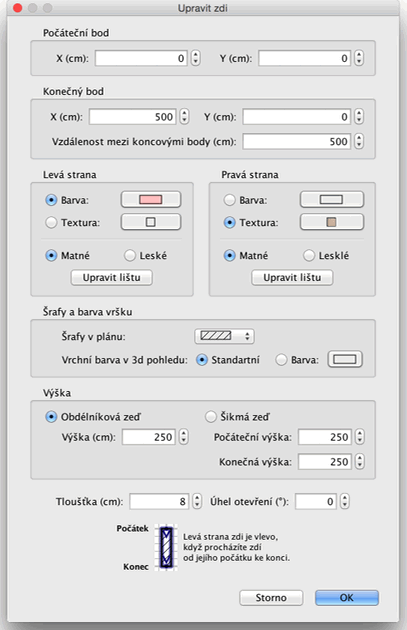

| Úprava zdí | |||
Umístění a délku zdí můžete měnit pomocí nebo pomocí nabídky Plán > Upravit zdi.... Máte-li již jednu zeď vybranou, můžete pohybovat jejím počátečním i koncovým bodem pomocí indikátorů na obou koncích označené zdi.
|

|
Umístíte-li ukazatel myši nad počáteční nebo konečný bod vybrané zdi, můžete jimi pomocí jejich indikátorů táhnutím pohybovat.
Při stisku tlačítka myši se zobrazí kontextová nápověda zobrazující délku vybrané zdi. Zdi můžete rovněž upravovat pomocí okna, které spustíte buď dvojitým kliknutím na vybrané zdi v plánu, nebo po označení zdi nabídkou Plán > Upravit zdi....  V okně úpravy zdí můžete měnit umístěn počátečního a konečného bodu zdi, barvu nebo texturu její levé i pravé strany, její tloušťku a výšku. |
|